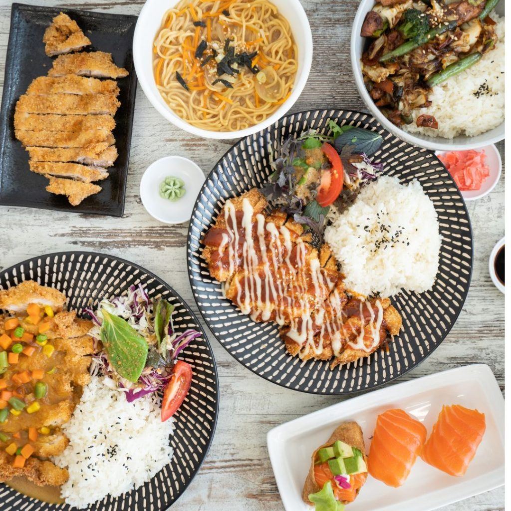

Japan
Japanese food is known for its simplicity, freshness, and balance of flavors. Meals often focus on natural ingredients like rice, fish, vegetables, and soy-based foods, with an emphasis on presentation and seasonal produce. Popular dishes such as sushi, ramen, and tempura highlight careful preparation and respect for ingredients, making Japanese cuisine both comforting and refined.
In this blog, we will dive into the history of Japanese cuisine and provide easy to follow recipes for some Japanese cuisine.